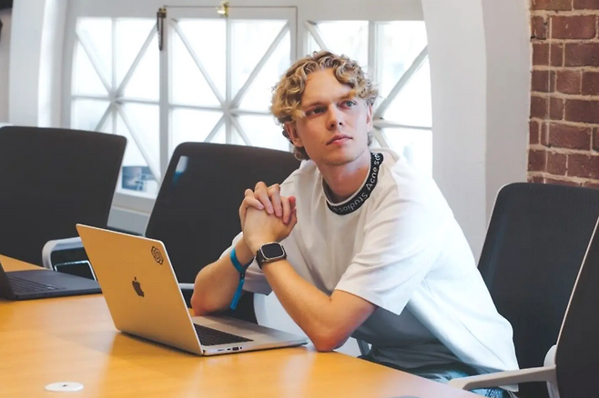

21세기 아키텍트형 인재의 표본
정규 학위 없이 오직 '과제 중심 재귀 학습(RLT)'만으로 OpenAI Sora 팀 연구 과학자가 되기까지. 그가 증명한 탑다운(Top-down) 학습 혁명과 바이브 코딩을 넘어서는 심층 통제의 중요성을 분석합니다.
이제 지식의 보유량은 차별화 포인트가 아닙니다.
경쟁력은 당면한 문제에서 시작해 AI에게 끊임없이 질문하며 돌파하는 속도에 있습니다.
수동적인 위임자(Vibe Coder)를 넘어, 기술을 바닥부터 통제하는 주도적 아키텍트만이 AI 시대의 승자가 될 것입니다.
본 발표자료의 모태가 되는 LLM Wiki의 상세 분석 내용과 원문 문서 정보는 옵시디언 위키 내의 아래 딥링크를 통해 직접 탐색할 수 있습니다.